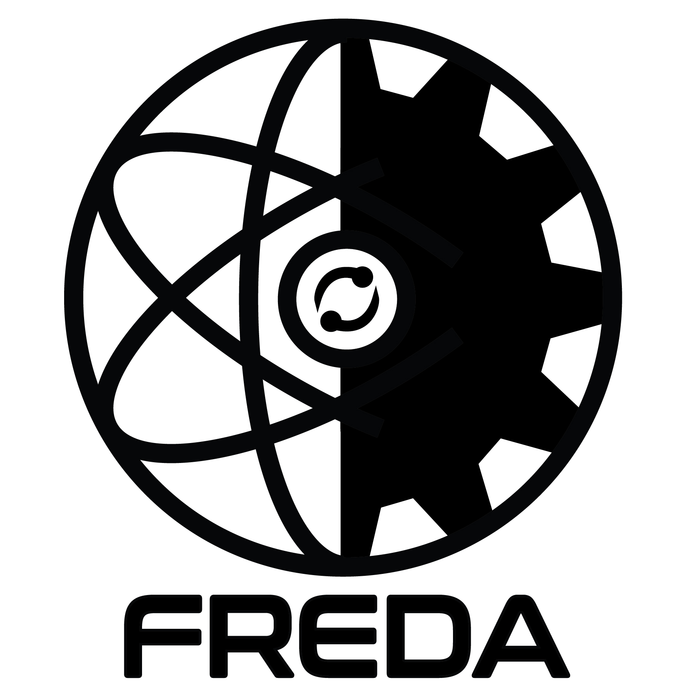

Introduction
{kind=link}
The Fusion REactor Design and Assessment (FREDA) Project
FREDA is a purpose-built framework for self-consistent, multi-fidelity, iterative optimization of next step fusion devices. FREDA connects the fusion-plasma modeling to surrounding fusion-engineering components, incorporating the theory-based integrated plasma modeling suite IPS-FASTRAN/CESOL and the multiphysics simulation tools of Fusion Energy Reactor Models Integrator (FERMI). FREDA utilizes parametric geometry to enable automatic generation of detailed parametrized CAD.
Mission and Scope
FREDA’s overarching goal is to connect plasma-materials-engineering modeling in ways that reveal coupled sensitivities, tolerance stack-ups, and system margins that would be invisible in traditional serial design approaches. The project initially applies to tokamaks and spherical tokamaks (STs), with potential future expansion to stellarators.
The framework spans three key design phases:
Design Scoping (lower fidelity): Large parameter space scans to identify promising design regions
Design Optimization (medium fidelity): De-risking components and sub-systems through focused analysis
Digital Twin (high fidelity): Full systems evaluation, pulse design, and operational scenario validation
Key Technical Capabilities
FREDA integrates three major modeling domains:
Fusion-Plasma Physics
Built on the open-source Integrated Plasma Simulator (IPS) framework developed in the AToM SciDAC project, FREDA couples core, edge, and scrape-off layer (SOL) plasma physics codes including:
Core transport: FASTRAN, TGLF, NCLASS
Edge physics: EPED
SOL modeling: SOLPS-ITER, UEDGE, BOUT++/Hermes-3
Equilibrium: EFIT, FreeGS
Heating and current drive: NUBEAM, TORAY, GENRAY
Parametric Geometry
A flexible geometry engine generates consistent representations across all physics domains, including systems codes, plasma equilibria, and detailed CAD models for engineering analysis. Two reactor class representations are currently available (FNSF-class and ARC-class) with automated transformation capabilities.
Fusion-Engineering
Based on the Fusion Energy Reactor Models Integrator (FERMI), the engineering module integrates:
Neutronics and tritium breeding: MCNP, SHIFT
Thermal hydraulics: OpenFOAM
Structural mechanics: DIABLO, Elmer
Electromagnetics: Elmer, OpenFOAM
Computational fluid dynamics: OpenFOAM
Framework Architecture
FREDA employs a component-based architecture with standardized data exchange through state files:
System State File: Top-level coordination across all domains
Plasma State File: Core and SOL plasma quantities
Geometry State File: Parametric representations of all components
Engineering State File: Neutronics, structural, thermal, electromagnetic, and CFD results
This architecture enables swappable modules with diverse CPU/GPU requirements while maintaining data provenance and reproducibility. The framework currently runs on NERSC’s Perlmutter supercomputer and prioritizes open-source tools wherever feasible.
Philosophy: Orchestration, Not Full Automation
FREDA’s goal is not complete automation but rather orchestrated, traceable workflows that:
Handle geometry and data translation automatically (plasma flux → wall heat-flux maps → CFD meshes → neutronics)
Maintain rigorous provenance tracking (code versions, inputs, assumptions)
Automate parameter scans, UQ, and sensitivity analysis
Use standardized APIs enabling reproduction and extension without domain expertise in every code
Reduce bottlenecks so experts can focus on interpretation rather than tedious file handling
Most physics and engineering codes require expert judgment for setup, boundary assumptions, calibration, convergence assessment, and interpretation. Forcing complete automation risks “garbage in → garbage out” scenarios. FREDA instead enables experts to work more efficiently within a well-structured, reproducible framework.
Critical Physics Challenges
FREDA’s current development areas are driven by specific fusion power plant (FPP) challenges that require integrated modeling:
- Impurities and “Slag” Management
Main wall erosion can dominate impurity influx during detached divertor operation. Solid plasma-facing components (PFCs) experience tons per year of net erosion and redeposition, with eroded material (“slag”) potentially causing disruptions and retaining tritium. FREDA couples edge/SOL particle flux → neutral transport → plasma erosion and sputtering → redeposition patterns → tritium co-deposition, while thermal loads affect slag layer temperature → adhesion and exfoliation probability.
- PFC Material Lifetime and Operational Windows
Neutron damage, thermal fatigue, and irradiation transmutation narrow safe operational windows. FREDA must determine first wall armor thickness, replacement schedules, and allowable degradation by coupling: neutronics → transmutation → composition → property degradation (thermal conductivity κ, electrical conductivity σ, ductile-to-brittle transition temperature DBTT); thermal fatigue → irradiation creep → mechanical stress; and coolant choice → material corrosion and activation.
- Tritium Retention, Permeation, and Extraction
Low-Z materials co-deposit tritium while high-Z materials absorb or trap it through diffusion or bubble formation. Operating temperature windows must balance tritium extraction rates against permeation barrier requirements and wall temperature control to prevent cold traps. FREDA couples plasma flux → retention → surface temperature → tritium permeation through walls, and neutronics → tritium breeding ratio → net retention in slag and structures → blanket temperature → tritium concentration gradients.
- Thermal and Mechanical Coupling
Radiation-induced swelling and cracking combined with variable heat flux produce mechanical mismatch between layers (W/Cu, SiC/steel, coating/substrate). Cracking or delamination exposes new surfaces, changing erosion and impurity influx, or causing coolant leaks. Understanding thermo-mechanical fatigue under realistic load cycling is essential for availability predictions.
Project Organization
FREDA brings together expertise from multiple national laboratories, universities, and industry partners:
ORNL Fusion Energy Division: Core plasma modeling, edge/SOL physics, systems integration
ORNL Nuclear Energy and Fuel Cycle Division: Neutronics, tritium transport, blanket analysis
Lawrence Livermore National Laboratory: Edge physics modeling, BOUT++ development
General Atomics: Pedestal physics, validation
UC San Diego: Core turbulence modeling
ORNL Computer Science & Mathematics Division: Framework development, workflow optimization, uncertainty quantification
Sandia National Laboratories: Advanced optimization methods, UQ infrastructure
The project is funded through both FES and ASCR programs, reflecting its dual focus on fusion physics and advanced computing methodologies.
Contributing to FREDA
FREDA is designed as an extensible framework welcoming contributions from the fusion community. Whether you are developing new physics models, engineering analysis capabilities, or improved workflow tools, the FREDA architecture provides standardized interfaces for integration. The project maintains open documentation, code repositories, and communicates regularly at community conferences to facilitate collaboration.